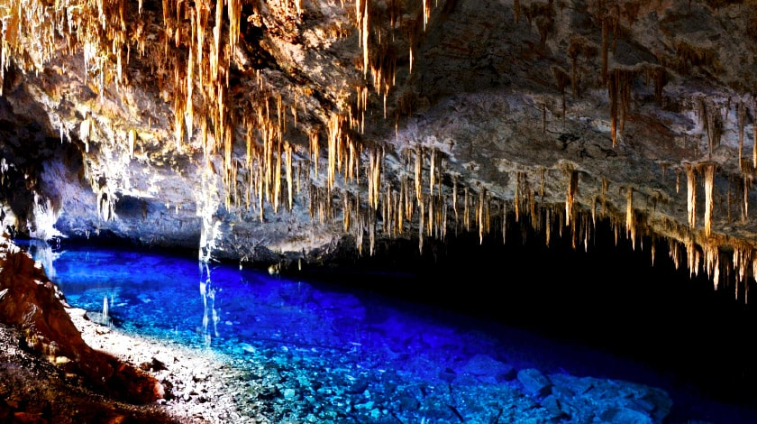
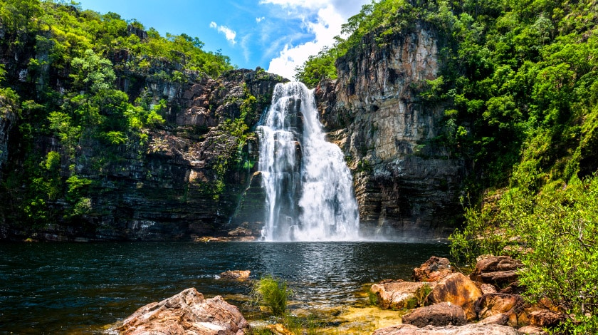

Gruta da Lagoa Azul

Situada em Bonito, cidade muito procurada por sua natureza exuberante no Mato
Grosso do Sul, a gruta cheia de formações de estalactites abriga um lago de
águas cristalinas, que com o reflexo do sol ganha uma tonalidade de azul
encantadora, tornando-a assim um dos maiores pontos turísticos do país.
Para chegar é preciso percorrer uma trilha e descer quase 300 degraus até o deck
de contemplação. A melhor época para ver o lago no ápice de sua beleza é de
dezembro a janeiro, especialmente pela manhã.
Caverna Aroe Jari
Um dos passeios mais bonitos da Chapada dos Guimarães, no norte do Mato
Grosso! A caverna é a maior gruta de arenito do Brasil, com 1.550 m de extensão.
Seu nome significa “Morada das Almas” e para chegar até sua entrada é preciso
percorrer aproximadamente 8 km de trilha em meio à flora local. Depois da caminhada,
o viajante é recompensado com as belezas naturais da gruta. Os passeios costumam
passar também pela Ponte de Pedra, Gruta da Lagoa Azul (apesar do nome, não é
a mesma de Bonito!), Caverna Kiogo Brado e Cachoeira do Relógio.
Chapada dos Veadeiros

Em Goiás, na região Centro-Oeste do país, está um dos mais mágicos pontos
turísticos do Brasil. Os cenários são compostos por inúmeras cachoeiras,
cânions, cavernas, piscinas naturais, vegetação típica de cerrado e uma
riquíssima e diversa fauna, com espécies de animais ameaçados de extinção,
como a onça-pintada e o lobo-guará. As atividades vão desde opções mais
tranquilas, como trilhas para mirantes, até mais radicais, por exemplo rapel,
tirolesa e rafting. Vale conhecer o Mirante da Janela, o Vale da Lua e a
Cachoeira do Segredo.